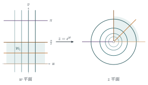

STEP II 1997，第 5 题
继续之前，请先阅读题目（原题为英文）。题目载于 STEP Support Programme 的题目资料库： step.maths.org/questions/97-s2-q5
引子
你所认识的指数函数（exponential function）是一条曲线 \(y = e^x\)。但复变量的函数却无法画成曲线：它的输入是平面上的一点，输出也是平面上的一点。要想像这样的函数，应把它看成一个映射（map），也就是一个变换（transformation）：它把一个平面上的每一点搬到另一个平面上的某一点，沿途把图形拉伸、弯曲。
题目中的公式是 \(z = e^{u}(\cos v + \mathrm{i}\sin v) = e^{u + \mathrm{i}v} = e^w\)。作为映射来看，复指数函数（complex exponential）做了一件奇妙的事：它把平面上的一条水平带状区域卷成整个平面（除去原点），把铅垂线绕成圆，把水平线铺成射线。又因为它是绕圈卷起来的，所以它不是一对一（one-to-one）的：每一点都有无穷多个点映到它那里。这正是复对数（complex logarithm）“多值”（multi-valued）的原因，也是复分析（complex analysis）最早带来的惊奇之一。
动笔之前
\(z = e^u(\cos v + \mathrm{i}\sin v)\) 的模（modulus）和辐角（argument）用 \(u\) 和 \(v\) 表示是甚么？
\(|z| = e^u\)，而 \(\arg z = v\)（可相差 \(2\pi\) 的倍数）。所以 \(w\) 的实部 \(u\) 以指数方式控制与原点的距离，而虚部 \(v\) 则控制方向。单凭这一点观察，题目几乎每一部分都能解答。
逐步解题
阶段 1 解 \(e^w = \mathrm{i}e\)
\(\mathrm{i}e\) 的模和辐角是甚么？
\(|\mathrm{i}e| = e\)，而 \(\arg(\mathrm{i}e) = \frac\pi2\)。所以我们需要 \(e^u = e\)，得 \(u = 1\)，并且 \(v = \frac\pi2 + 2k\pi\)，其中 \(k\) 为任意整数。方程的解为 \[w = 1 + \mathrm{i}\left(\tfrac\pi2 + 2k\pi\right), \qquad k \in \mathbb{Z}.\] 解有无穷多个，沿铅垂方向每隔 \(2\pi\) 有一个。
阶段 2 格线的像
在铅垂线 \(u = c\) 上，\(|z| = e^c\) 固定不变，而 \(v\) 则在变动：它的像（image）是以原点为圆心、半径为 \(e^c\) 的圆，当 \(v\) 取遍所有实数时，这个圆被绕了无穷多圈。
在水平线 \(v = d\) 上，\(\arg z = d\) 固定不变，而 \(|z| = e^u\) 取遍所有正值：它的像是由原点出发、方向角为 \(d\) 的开射线（半直线），不包括原点本身。直线 \(v = d\) 与 \(v = d + 2\pi\) 给出同一条射线。

阶段 3 一对一的部分
哪些点 \(w\) 会映入第一象限 \(x > 0\)、\(y > 0\)？为甚么这个集合太大，不能与该象限构成一一对应（one-to-one correspondence）？
\(z\) 位于开的第一象限，当且仅当 \(\arg z\) 严格介乎 \(0\) 与 \(\frac\pi2\) 之间（模 \(2\pi\)），而模可取任意值。所以 \(w\) 必须满足 \(0 < v < \frac\pi2\) 或 \(2\pi < v < \frac{5\pi}{2}\) 或 …：共有无穷多条水平带状区域，每一条都映满整个象限。任取其中一条，它都与该象限一一对应，因为在一条带状区域之内，\(u\) 和 \(v\) 由 \(|z|\) 和 \(\arg z\) 唯一确定。所以我们可以取 \[W_1 = \{u + \mathrm{i}v : 0 < v < \tfrac\pi2\}, \qquad W_2 = \{u + \mathrm{i}v : 2\pi < v < \tfrac{5\pi}{2}\}.\]
现在试在 \(w\) 平面上找出两个集合，使它们各自与去心圆盘（punctured disc）\(0 < |z| < 1\) 一一对应。
\(|z| < 1\) 即 \(e^u < 1\)，亦即 \(u < 0\)；而每一个辐角都必须恰好被覆盖一次，所以 \(v\) 的取值范围应是一个长度恰为 \(2\pi\) 的区间，包括其中一个端点而不包括另一个。例如 \[W_3 = \{u + \mathrm{i}v : u < 0,\ 0 \leq v < 2\pi\}, \qquad W_4 = \{u + \mathrm{i}v : u < 0,\ -\pi < v \leq \pi\}.\] 这些都是半带状区域，一条边包括在内，另一条边不包括在内。（若两条边都包括在内，正实轴上的点便会被映到两次；若两条边都不包括，这些点便会被遗漏。）■
回顾
模和辐角把变量分开。\(|e^w| = e^{\mathrm{Re}\,w}\)，而 \(\arg e^w = \mathrm{Im}\,w\)，所以 \(w\) 的实部和虚部分别独立地控制距离和方向。
把复函数想像成映射。追踪格线被映到哪里，便能清楚看见一个无法画成图像的函数的面貌。
周期性破坏单射性（injectivity）。\(e^{w + 2\pi\mathrm{i}} = e^w\)，所以这个映射是多对一的，必须限制在一条高度为 \(2\pi\) 的带状区域上，才有反函数。
背后的数学
在实数线上，\(\ln\) 是 \(\exp\) 的反函数。在复平面上，对每一个 \(z \neq 0\)，方程 \(e^w = z\) 都有无穷多个解 \(w\)，彼此相差 \(2\pi\mathrm{i}\) 的倍数，所以“\(\log z\)”并不是单独一个数。要得到一个真正的函数，就必须选定一个分支（branch），也就是选定一条像 \(W_3\) 或 \(W_4\) 那样的带状区域：主分支（principal branch）取 \(-\pi < \arg z \leq \pi\)。每一个分支都必然在某处有跳跃，跳跃发生在由原点出发的一条射线上，这条射线称为分支割线（branch cut）。黎曼（Bernhard Riemann）在 1851 年的博士论文中提出了解决办法：不再坚持对数函数要定义在一个平面上。它其实定义在一道无穷的螺旋楼梯上，即一个黎曼曲面（Riemann surface）；在这个曲面上，对数函数是单值而且光滑的。时至今日，黎曼曲面在几何、数论和弦论中都占有核心地位。
角度保持不变
再看一次图 5.7.1。铅垂和水平的格线相交成直角，它们变成的圆和射线也是如此。这并非巧合：凡是复函数的导数不为零之处，该函数都会保持曲线之间的夹角不变。这样的映射称为保角（conformal）映射。在局部范围内，保角映射不过是一次旋转加上一次缩放，而这正是乘以复数 \(f'(z)\) 所起的作用。保角映射可用来解决流体流动、静电学和热传导的问题，方法是把一个复杂的区域变换成一个答案已知的简单区域。
麦卡托地图
这里有一个意想不到的发现，把本节与 第 4.8 节 连系起来。麦卡托（Gerardus Mercator）在 1569 年绘制的地图，设计的目的是令罗盘方位恒定的航线成为一条直线，这就要求地图保持角度不变。如果你先把地球以球极投影（stereographic projection）的方式（从北极出发）投影到一个平面上，然后取复对数，所得的结果恰好就是麦卡托投影：经线变成铅垂线，纬线变成水平线，正如射线和圆在 \(\log\) 之下变成水平线和铅垂线一样。把本节的指数映射倒过来运行，就是航海图背后的数学。
思维技巧
当一个函数无法画成图像时，就把它所做的事画出来：取一组由简单曲线组成的格网，看看它们被映到哪里。
对于复函数，水平线和铅垂线的像，或者圆和射线的像，往往已能说明一切。这种着眼于映射如何改变图形的思考方式，贯穿整个几何与分析。
延伸练习
解方程。求所有满足 \(e^w = -1\) 的复数 \(w\)，以及所有满足 \(e^w = 1 + \mathrm{i}\) 的 \(w\)。
正方形的像。求顶点为 \(0\)、\(1\)、\(1 + \mathrm{i}\) 和 \(\mathrm{i}\) 的正方形在 \(z = e^w\) 之下的像，并画出草图。
直角。直接证明圆 \(|z| = e^c\) 与射线 \(\arg z = d\) 相交成直角，并解释为甚么这与直线 \(u = c\) 和 \(v = d\) 互相垂直是一致的。
平方。设 \(c\) 和 \(d\) 为非零实数。求直线 \(x = c\) 和 \(y = d\) 在映射 \(z \mapsto z^2\) 之下的像。证明它们都是抛物线，并且凡相交之处都相交成直角。（若 \(c = 0\) 或 \(d = 0\)，情况会怎样？）
延伸阅读
Tristan Needham, Visual Complex Analysis（Oxford University Press）。第 2 章和第 4 章以精彩的插图讲解指数函数、对数函数和保角映射。
Hilary Priestley, Introduction to Complex Analysis（Oxford University Press）。一本清晰易懂的大学本科入门教材。
Ian Stewart & David Tall, Complex Analysis（Cambridge University Press）。另一本出色的本科入门书，着重几何观点。